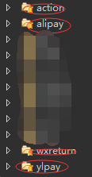
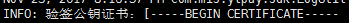
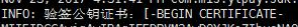

可以参考：http://blog.csdn.net/haozhuxuan/article/details/53637243
https://open.unionpay.com/upload/download/%E5%B9%B3%E5%8F%B0%E6%8E%A5%E5%85%A5%E6%8E%A5%E5%8F%A3%E8%A7%84%E8%8C%83-%E7%AC%AC5%E9%83%A8%E5%88%86-%E9%99%84%E5%BD%95V2.2.pdf
https://open.unionpay.com/ajweb/help/file/techFile?productId=1
本次开发后台是struts框架，不是SpringMVC!!!
上周五组长安排我把后台管理系统的银联退款写好，由于支付宝和微信退款其他人早就写好了，我想照着抄抄不就OK了吗？
嗯，我想多了。
同事之前开发银联支付把支付的坑踩得差不多了，我想退款开发起来很简单吧。肯定有退款接口吧。
然后同事把银联相关知识文档地址发给我。
老实说，我打开一看，这些都什么啊，怎么这么多分类啊，哪个对哪个啊。
不多说，问。
哦，她选的是网关支付，然后我傻兮兮的找了半天，退款呢？？？Excuse me? Where is my 退款???
不吹不黑，第一次独立开发java这种级别的接口，要自己看官方文档，真的是一头雾水。。。完全不知道看哪个，都花了。然后百度，看到一个java写的，用的SpringMVC，我一看，嗯，亲切，好歹用过啊。整篇复制粘贴，改点数据应该哦了吧！
当然不可能啦！
倒是看看他的文件位置和内容，我又对照着同事写的支付，咦，SDK一样的，web文件夹下面两个类文件一样的，还有其他的，直接拿过来用。

但是，毕竟小白第一次，很晕。怎么调都不会，很惭愧。
后来，同事告诉我哪个是我们要用的官方文档加示例，下载下来， 打开一看，一堆红，有点慌，仔细看看，原来是jar包没导入，没事。看看方法，嗯?doPost,doGet，这不是HttpServlet的方法吗，这貌似好像是页面跳转时才能用吧。我这写在独立的银联支付文件夹下面的怎么搞，我真不知道(因为支付宝和微信都是写在该层的)。然后看看同事开发的支付代码，由于是另一个项目，用的SpringMVC，@RequestMapping看着就很熟，遂，抄。参数照着抄。
运行，失败。。。
问了旁边的熊，他说，struts和SpringMVC是两个框架，@RequestMapping是SpringMVC的注解，struts不能用，只能用action层的那种方式，但是，你想采用那种方式进行地址访问必须写在action层。
但是，我想照着下面支付宝调用的方法写，官方给的却是doPost方法，我没辙了。
1
| String zfbresult = Alipay.alipayRefundRequest(oreturn.getOrderid(), oreturn.getAppid(), oreturn.getReturnprice());
|
就这样，一直纠结着。。。几乎一天。没法子，厚着脸求教师傅，师傅一过来，看看官方案例，再对比下开发好的支付代码，只见他刷刷刷，复制粘贴，改参数，全程3分钟，OK。
我感到绝望，泪如雨下。。。。。。
不过他是把代码全写在service层的，没有像支付宝微信那样独立两个文件利用静态方法的形式来调用。
但是我还是想像支付宝微信那样的架构，不想全写在service里，那我该怎么办呢？
我还是硬着头皮模仿支付宝方法开头去写了，只是把师傅帮我写好的代码全复制粘贴进去，然后，其实很明了了，需要什么数据传过来不就好了。
接下来就简单了，把官方案例复制过来，改改参数然后开启debug不断调试。
调试也是令人心碎，一开始报35，“原订单不存在或状态不正确”，这是因为我一开始不知道怎么得到queryId(支付流水号)，这个是必须的，不然找不到。后来仔细读官方接口，才发现可以通过查询接口得到(我写在YlpayInquire.java)。后来又报“重复交易”，我开始怀疑是不是接口掉错了，但是仔细对比，并没有错，不得已，继续百度，终于找到原因，这是因为我提交退款的订单号和当时提交支付的订单号是一样的，我们正常想法觉得肯定是一样的啊，但是银联接口规定的商户订单号，8-40位数字字母，不能含“-”或“_”，可以自行定制规则，重新产生，不同于原消费，这里不同于原消费就是告诉我们不能和原来的订单号一样，这也是个坑，幸好网上有人踩过并贴出来，不然我还不知道要卡多久呢。
注意：
1 2 3 4
| data.put("orderId", Ylconfig.getOrderId()); //商户订单号，8-40位数字字母，不能含“-”或“_”， //可以自行定制规则，重新产生，不同于原消费(不能和支付时的订单号一样，否则报重复提交) data.put("origQryId", queryId); //【原始交易流水号】，原消费交易返回的的queryId， //可以从消费交易后台通知接口中或者交易状态查询接口中获取
|
还是贴源码吧：
Ylpay.java:
1 2 3 4 5 6 7 8 9 10 11 12 13 14 15 16 17 18 19 20 21 22 23 24 25 26 27 28 29 30 31 32 33 34 35 36 37 38 39 40 41 42 43 44 45 46 47 48 49 50 51 52 53 54 55 56 57 58 59 60 61 62 63 64 65 66 67 68 69 70 71 72 73 74 75 76 77 78 79 80 81 82
| public class Ylpay { public static String ylpayRefundRequest(String orderid, String app_id, String returnid, double returnprice) { SDKConfig.getConfig().loadPropertiesFromSrc(); //从classpath加载acp_sdk.properties文件 String resMsg = ""; try { String queryId = YlpayInquire.YlpayInquire(orderid, Ylconfig.getCurrentTime(), app_id); String txnAmt = String.valueOf((int)Math.abs(returnprice*100)); Map<String, String> data = new HashMap<String, String>(); /***银联全渠道系统，产品参数，除了encoding自行选择外其他不需修改***/ data.put("version", Ylconfig.version); //版本号 data.put("encoding", Ylconfig.encoding); //字符集编码 可以使用UTF-8,GBK两种方式 data.put("signMethod", SDKConfig.getConfig().getSignMethod()); //签名方法 data.put("txnType", "04"); //交易类型 04-退货 data.put("txnSubType", "00"); //交易子类型 默认00 data.put("bizType", "000201"); //业务类型 B2C网关支付，手机wap支付 data.put("channelType", "07"); //渠道类型，07-PC，08-手机 /***商户接入参数***/ data.put("merId", "700000000000001"); //商户号码，请改成自己申请的商户号或者open上注册得来的777商户号测试 data.put("accessType", "0"); //接入类型，商户接入固定填0，不需修改 data.put("orderId", Ylconfig.getOrderId()); //商户订单号，8-40位数字字母， //不能含“-”或“_”，可以自行定制规则，重新产生，不同于原消费(不能和支付时的订单号一样，否则报重复提交) data.put("txnTime", Ylconfig.getCurrentTime()); //订单发送时间，格式为YYYYMMDDhhmmss， //必须取当前时间，否则会报txnTime无效 data.put("currencyCode", "156"); //交易币种(境内商户一般是156 人民币) data.put("txnAmt", txnAmt); //【撤销金额】，消费撤销时必须和原消费金额相同 //data.put("reqReserved", "透传信息"); //请求方保留域，，如需使用请启用即可； //透传字段（可以实现商户自定义参数的追踪）本交易的后台通知, //对本交易的交易状态查询交易、对账文件中均会原样返回，商户可以按需上传，长度为1-1024个字节。 //出现&={}[]符号时可能导致查询接口应答报文解析失败， //建议尽量只传字母数字并使用|分割，或者可以最外层做一次base64编码 //(base64编码之后出现的等号不会导致解析失败可以不用管)。 data.put("backUrl", Ylconfig.backUrl); //后台通知地址，后台通知参数详见 //open.unionpay.com帮助中心 下载 产品接口规范 网关支付产品接口规范 消费撤销交易 商户通知, //其他说明同消费交易的商户通知 /***要调通交易以下字段必须修改***/ data.put("origQryId", queryId); //【原始交易流水号】，原消费交易返回的的queryId, //可以从消费交易后台通知接口中或者交易状态查询接口中获取 /**请求参数设置完毕，以下对请求参数进行签名并发送http post请求，接收同步应答报文**/ Map<String, String> reqData = AcpService.sign(data,Ylconfig.encoding);//报文中certId,signature的值是在signData方法中获取并自动赋值的，只要证书配置正确即可。 String reqUrl = SDKConfig.getConfig().getBackRequestUrl();//交易请求url从配置文件读取对应属性文件acp_sdk.properties中的 acpsdk.backTransUrl Map<String,String> rspData = AcpService.post(reqData,reqUrl,Ylconfig.encoding);//发送请求报文并接受同步应答（默认连接超时时间30秒，读取返回结果超时时间30秒）; //这里调用signData之后，调用submitUrl之前不能对submitFromData中的键值对做任何修改，如果修改会导致验签不通过 /**对应答码的处理，请根据您的业务逻辑来编写程序,以下应答码处理逻辑仅供参考------------->**/ //应答码规范参考open.unionpay.com帮助中心 下载 产品接口规范 《平台接入接口规范-第5部分-附录》 if(!rspData.isEmpty()){ if(AcpService.validate(rspData, Ylconfig.encoding)){ LogUtil.writeLog("验证签名成功"); String respCode = rspData.get("respCode"); resMsg = rspData.get("respMsg"); if("00".equals(respCode)){ //交易已受理(不代表交易已成功），等待接收后台通知确定交易成功，也可以主动发起 查询交易确定交易状态。 //TODO System.out.println("respCode = 00"); System.out.println("申请退款成功!等待银联处理"); }else if("03".equals(respCode) || "04".equals(respCode) || "05".equals(respCode)){ //后续需发起交易状态查询交易确定交易状态。 //TODO System.out.println("退款失败1"); }else{ //其他应答码为失败请排查原因 //TODO System.out.println("退款失败2"); } }else{ LogUtil.writeErrorLog("验证签名失败"); //TODO 检查验证签名失败的原因 System.out.println("退款失败3"); } }else{ //未返回正确的http状态 LogUtil.writeErrorLog("未获取到返回报文或返回http状态码非200"); } String reqMessage = Ylconfig.genHtmlResult(reqData); String rspMessage = Ylconfig.genHtmlResult(rspData); } catch (Exception e) { // TODO: handle exception } return resMsg; } }
|
YlpayInquire.java:
1 2 3 4 5 6 7 8 9 10 11 12 13 14 15 16 17 18 19 20 21 22 23 24 25 26 27 28 29 30 31 32 33 34 35 36 37 38 39 40 41 42 43 44 45 46 47 48 49 50 51 52 53 54 55 56 57 58 59 60 61 62 63 64 65 66
| public class YlpayInquire { public static String YlpayInquire(String orderId, String txnTime, String app_id) { String reqMessage = ""; String rspMessage = ""; String queryId = ""; SDKConfig.getConfig().loadPropertiesFromSrc(); //从classpath加载acp_sdk.properties文件 try{ Map<String, String> data = new HashMap<String, String>(); /***银联全渠道系统，产品参数，除了encoding自行选择外其他不需修改***/ data.put("version", Ylconfig.version); //版本号 data.put("encoding", Ylconfig.encoding); //字符集编码 可以使用UTF-8,GBK两种方式 data.put("signMethod", SDKConfig.getConfig().getSignMethod()); //签名方法 data.put("txnType", "00"); //交易类型 00-默认 data.put("txnSubType", "00"); //交易子类型 默认00 data.put("bizType", "000201"); //业务类型 B2C网关支付，手机wap支付 /***商户接入参数***/ data.put("merId", "700000000000001"); //商户号码，请改成自己申请的商户号或者open上注册得来的777商户号测试 data.put("accessType", "0"); //接入类型，商户接入固定填0，不需修改 /***要调通交易以下字段必须修改***/ data.put("orderId", orderId); //****商户订单号，每次发交易测试需修改为被查询的交易的订单号 data.put("txnTime", txnTime); //****订单发送时间，每次发交易测试需修改为被查询的交易的订单发送时间 /**请求参数设置完毕，以下对请求参数进行签名并发送http post请求，接收同步应答报文------------->**/ Map<String, String> reqData = AcpService.sign(data,Ylconfig.encoding);//报文中certId,signature的值是在signData方法中获取并自动赋值的，只要证书配置正确即可。 String url = SDKConfig.getConfig().getSingleQueryUrl();// 交易请求url从配置文件读取对应属性文件acp_sdk.properties中的 acpsdk.singleQueryUrl //这里调用signData之后，调用submitUrl之前不能对submitFromData中的键值对做任何修改，如果修改会导致验签不通过 Map<String, String> rspData = AcpService.post(reqData,url,Ylconfig.encoding); /**对应答码的处理，请根据您的业务逻辑来编写程序,以下应答码处理逻辑仅供参考------------->**/ //应答码规范参考open.unionpay.com帮助中心 下载 产品接口规范 《平台接入接口规范-第5部分-附录》 if(!rspData.isEmpty()){ if(AcpService.validate(rspData, Ylconfig.encoding)){ LogUtil.writeLog("验证签名成功"); queryId = rspData.get("queryId"); if("00".equals(rspData.get("respCode"))){//如果查询交易成功 //处理被查询交易的应答码逻辑 String origRespCode = rspData.get("origRespCode"); if("00".equals(origRespCode)){ //交易成功，更新商户订单状态 //TODO }else if("03".equals(origRespCode) || "04".equals(origRespCode) || "05".equals(origRespCode)){ //需再次发起交易状态查询交易 //TODO }else{ //其他应答码为失败请排查原因 //TODO } }else{//查询交易本身失败，或者未查到原交易，检查查询交易报文要素 //TODO } }else{ LogUtil.writeErrorLog("验证签名失败"); //TODO 检查验证签名失败的原因 } }else{ //未返回正确的http状态 LogUtil.writeErrorLog("未获取到返回报文或返回http状态码非200"); } reqMessage = Ylconfig.genHtmlResult(reqData); rspMessage = Ylconfig.genHtmlResult(rspData); } catch(Exception e) { } System.out.println(queryId); return queryId; } }
|
struts退款回调问题
因为退款回调地址必须能被银联访问到，所以需要在服务器上测试。之前一直以为弄好了，结果以上服务器，回调验签失败，整个人都懵逼了。然后和熊、苍老师一起研究，然后他们说要写在action层，好，写在了action层，但是代码貌似不对啊，原来的是SpringMVC的写法
SpringMVC写法：
1 2 3 4 5 6 7 8 9
| /** * 返回后台通知 * @param request * @param response */ @RequestMapping(value = "/backRcvResponse") public void BackRcvResponse( HttpServletRequest req, HttpServletResponse resp) { ReturnValue rtv = new ReturnValue(); ...
|
但是经我试验，struts不能这样写，后来经过不断地修改，摸索，改成了下面这样：
1 2 3 4 5 6 7 8 9 10 11 12 13 14 15 16 17 18 19 20 21 22 23 24 25 26 27 28 29 30 31 32 33 34 35 36 37 38 39 40 41 42 43 44 45 46 47 48 49 50 51 52 53 54 55 56 57 58 59 60 61 62 63 64 65 66 67 68 69 70 71 72 73 74 75 76 77 78 79 80 81 82 83 84 85 86 87 88 89 90 91 92 93 94 95 96 97 98 99 100 101 102 103 104 105 106
| /** * 返回后台通知 * @param request * @param response */ @AuthMethod(Menus = "", Auth = MenuAuth.Modify, OutType = ActionOutType.Bean) public String BackRcvResponsess() throws Exception { System.out.println("BackRcvResponsess==="); HttpServletRequest req = ServletActionContext.getRequest(); HttpServletResponse resp = ServletActionContext.getResponse(); ReturnValue rtv = new ReturnValue(); try { SDKConfig.getConfig().loadPropertiesFromSrc(); //从classpath加载acp_sdk.properties文件 System.out.println("BackRcvResponsess接收后台通知开始"); System.out.println("req11111111111111111111111111"+req); // 获取银联通知服务器发送的后台通知参数 Map<String, String> reqParam = getAllRequestParam(req); String encoding = req.getParameter(SDKConstants.param_encoding); // System.out.println(reqParam); //重要！验证签名前不要修改reqParam中的键值对的内容，否则会验签不过 if (!AcpService.validate(reqParam, encoding)) { System.out.println(reqParam.get("respMsg")+"======"+reqParam.get("respCode")); System.out.println("验证签名结果[失败]."); //验签失败，需解决验签问题 } else { System.out.println("验证签名结果[成功]."); //【注：为了安全验签成功才应该写商户的成功处理逻辑】交易成功，更新商户订单状态 String orderId =reqParam.get("orderId"); //获取后台通知的数据，其他字段也可用类似方式获取 String respCode = reqParam.get("respCode"); //判断respCode=00、A6后，对涉及资金类的交易，请再发起查询接口查询，确定交易成功后更新数据库。 System.out.println("==========="+respCode+"========="+orderId); } System.out.println("BackRcvResponsess接收后台通知结束"); //返回给银联服务器http 200 状态码 resp.getWriter().print("ok"); } catch (Exception e) { e.printStackTrace(); } return null; } <!------------------------------------------------> /** * 获取请求参数中所有的信息 * 当商户上送frontUrl或backUrl地址中带有参数信息的时候， * 这种方式会将url地址中的参数读到map中，会导多出来这些信息从而致验签失败，这个时候可以自行修改过滤掉url中的参数或者使用getAllRequestParamStream方法。 * @param request * @return */ public static Map<String, String> getAllRequestParam( final HttpServletRequest request) { Map<String, String> res = new HashMap<String, String>(); Enumeration<?> temp = request.getParameterNames(); System.out.println("getAllRequestParam方法:"+temp+"cccccccccccccccccccccc"); if (null != temp) { while (temp.hasMoreElements()) { String en = (String) temp.nextElement(); String value = request.getParameter(en); //System.out.println("eneneneneneneenen:"+en); //System.out.println("value==================:"+value); if(value.indexOf("-BEGIN CERTIFICATE-") != -1) { value = "----" + value.substring(0, 19) + "----" + value.substring(19, value.length()-17) + "----" + value.substring(value.length()-17, value.length()) + "----"; } res.put(en, value); // 在报文上送时，如果字段的值为空，则不上送<下面的处理为在获取所有参数数据时，判断若值为空，则删除这个字段> if (res.get(en) == null || "".equals(res.get(en))) { // System.out.println("======为空的字段名===="+en); res.remove(en); } } } return res; } <!------------------------------------------------> /** * 获取请求参数中所有的信息。 * 非struts可以改用此方法获取，好处是可以过滤掉request.getParameter方法过滤不掉的url中的参数。 * struts可能对某些content-type会提前读取参数导致从inputstream读不到信息，所以可能用不了这个方法。理论应该可以调整struts配置使不影响，但请自己去研究。 * 调用本方法之前不能调用req.getParameter("key");这种方法，否则会导致request取不到输入流。 * @param request * @return */ public static Map<String, String> getAllRequestParamStream( final HttpServletRequest request) { Map<String, String> res = new HashMap<String, String>(); try { String notifyStr = new String(IOUtils.toByteArray(request.getInputStream()),Ylconfig.encoding); System.out.println("收到通知报文：" + notifyStr); String[] kvs= notifyStr.split("&"); for(String kv : kvs){ String[] tmp = kv.split("="); if(tmp.length >= 2){ String key = tmp[0]; String value = URLDecoder.decode(tmp[1],Ylconfig.encoding); res.put(key, value); } } } catch (UnsupportedEncodingException e) { System.out.println("getAllRequestParamStream.UnsupportedEncodingException error: " + e.getClass() + ":" + e.getMessage()); } catch (IOException e) { System.out.println("getAllRequestParamStream.IOException error: " + e.getClass() + ":" + e.getMessage()); } return res; } }
|
上面的代码是我经过连续3天不断调试、查找以及思考才想到的，真的菜啊。尤其是getAllRequestParam()里面的方法，经过我不断测试，对比(同事后来把回调写在另一个SpringMVC项目里结果成功了)成功的打印输出信息，终于发现加密文内容被修改了！！！
仔细对比:
成功加密截图:

失败加密截图:

通过截图的加密信息对比，可以看到，加密内容被破坏了，后来一路追踪找到了原因，就是在getAllRequestParam()该方法中被破坏的！
仔细看方法上边的注释,这种方式会将url地址中的参数读到map中，会导多出来这些信息从而致验签失败，这个时候可以自行修改过滤掉url中的参数或者使用,这种方法本身就具有风险性，需要我们自行修改！！！
后来我抱着尝试的心态，对该加密内容进行了最low的拼接字符串操作，然后试验了下，成功了！！！
坑真的是太多了！！！当成功二字出现的时候，我急乎要哭了！！！
追加。。。
稳妥起见，我打算通过回调成功与否来决定是否修改订单状态，好吧，坑又来了
由于原先的退款代码(包括支付宝和微信)写在service层,所以只要一跑通不出问题,就会直接往下走去修改订单状态，也就是说不管银联有没有回调成功，只要退款接口返回成功它就修改订单状态了，这样不好，不够稳妥。
我的第一次尝试：希望声明个类似js的全局变量，但是action层改变后service层也能访问到改变后的值，当时想法提出来但是不会实施了，毕竟不是专业的java,然后请教组长，组长说这样不大好,然后晚上跟熊商量了下，他直接否决，因为我没考虑到多人同时访问该方法的情况，如果多人同时访问该方法，有的退款成功的，该变量值会改变但是有的失败呢，这就比较烦了。失败。
第二次尝试：苍老师说银联会返回给你什么，比如订单号之类的，可以通过那个去查。我一想，对啊，银联确实返回给了我订单号等一大堆的东西，我直接通过订单号不就可以查到订单了吗，然后去修改订单状态。
果断实施,失败。
由于不想银联退款接口一成功就修改订单状态,所以做了修改，当退款接口返回成功时直接return掉，通过回调方法重新调一个修改订单状态的方法,需要专门重写一个。
这里又踩了坑！！！
银联返回的订单号并不是我们数据库里的订单号，因为退款接口里明确说了，该订单号不能和原来的交易订单号相同，我也试验了，会报重复交易的错。
该怎么办呢？根据交易流水号来查！
但是一开始做支付时并没有存交易流水号，所以数据库里空荡荡。。。
支付时记得把交易流水号写进去，退款回调时才能根据流水号查到订单号。
补充于2018-01-02
元旦前夕,测试说他之前的订单有个不能退款,当时我就吓了一跳。。。
该订单背景:
该订单是他几天前下的,一直忘了退款,直到12月29号才去退款,发现退不了,返回报文格式错误。我当时就看后台返回的内容,发现报文里面没有流水号等某些必须的字段,我立即想到会不会是代码合并被覆盖掉的原因,仔细一想也不大可能,毕竟其他人没动过这里,这边全是我写的。以防万一,我自己下了个订单试试,结果没问题能退款,看请求报文与返回的数据都不少字段。后来我想,难道是时间问题?但是我清楚的记得我用的是退货接口,退货接口可以支持11天以内的退款,撤销接口只能退当天的,这个我在开发时就知道了也避开了。所以不大可能是接口用错的问题。
这个问题当时没有解决,一直拖到了新年第二天上班。我仔细想了想应该是时间问题。然后对照官方案例,退货的确是要求传当前时间,说明这里没错啊,还有一个地方就是查询了。由于支付不是我开发的,一开始做支付的同事没有把流水号写进数据库,所以我当时就用了银联查询接口去查流水号然后把退款做出来了,后来同事知道我需要流水号,就在回调的时候写进数据库里,但是由于我当时已经做好了退款嫌麻烦还要改,就没动代码。结果,因为懒,出问题了吧。。。仔细看查询接口发现这里要传的时间是订单一开始的发送时间,问题就出在这里。因为报文格式错误前还返回了查无此订单！！！
解决:
一开始我还是嫌懒,就想着把正确的时间传过去不就好了吗,后来发现他们写得接口里时间是本地生成的,没用到数据库里的时间,我心里那叫一个苦啊,还是要动存储过程啊,罢了罢了,既然还是要动存储过程,那我还是直接通过取流水号来的省事多了,都不需要用到查询接口。。。就当教训吧。千万不要偷懒！